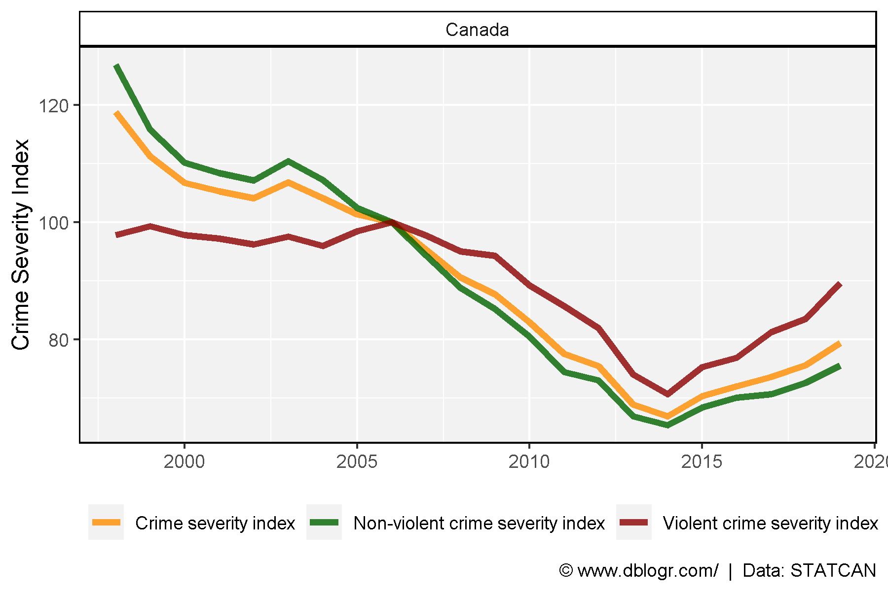

Data
Prep Data
# devtools::install_github("derekmichaelwright/agData")
library(agData) # Loads: tidyverse, ggpubr, ggbeeswarm, ggrepel
# Prep data
dd <- read.csv("3510002601_databaseLoadingData.csv") %>%
select(Year=1, Area=GEO, Measurement=Statistics, Unit=UOM, Value=VALUE)
d1 <- dd %>% filter(!grepl("Youth",Measurement))
d2 <- dd %>% filter(grepl("Youth",Measurement))
Crime Severity Index
# Prep data
colors <- c("darkorange", "darkgreen", "darkred")
xx <- d1 %>% filter(Area == "Canada")
# Plot
mp <- ggplot(xx, aes(x = Year, y = Value, color = Measurement)) +
geom_line(size = 1.5, alpha = 0.8) +
facet_wrap(Area ~ .) +
scale_color_manual(name = NULL, values = colors) +
theme_agData(legend.position = "bottom") +
labs(y = "Crime Severity Index", x = NULL,
caption = "\xa9 www.dblogr.com/ | Data: STATCAN")
ggsave("canada_crime_01.png", mp, width = 6, height = 4)

Youth Crime Severity Index
# Prep data
colors <- c("darkorange", "darkgreen", "darkred")
xx <- d2 %>% filter(Area == "Canada")
# Plot
mp <- ggplot(xx, aes(x = Year, y = Value, color = Measurement)) +
geom_line(size = 1.5, alpha = 0.8) +
facet_wrap(Area ~ .) +
scale_color_manual(name = NULL, values = colors) +
theme_agData(legend.position = "bottom") +
labs(y = "Crime Severity Index", x = NULL,
caption = "\xa9 www.dblogr.com/ | Data: STATCAN")
ggsave("canada_crime_02.png", mp, width = 6, height = 4)

© Derek Michael Wright 2020 www.dblogr.com/